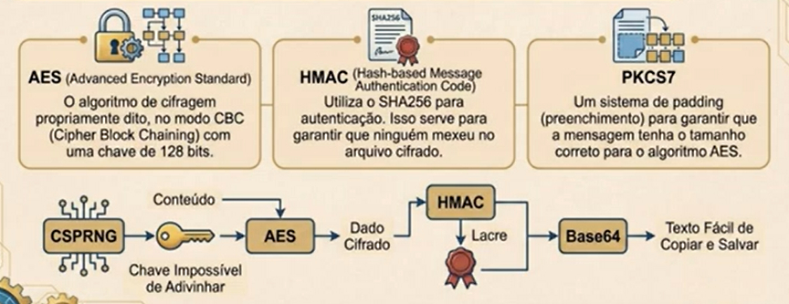

Ao fazer engenharia reversa num exe que foi gerado através do empacotamento de um script Python, podemos obter todo o código-fonte de todo o programa. Para dificultar isso, podemos ofuscar nosso código.
Primeiramente, coloque todo o código do rawCode em outro arquivo separado. E no cripter, coloque isso no lugar da atribuição da variável do mesmo nome:
with open("rawCode.py") as arqRaw:
rawCode = arqRaw.read()
rawCode = rawCode.replace("{p2}", str(p2)).replace("{p1}", str(p1))
Rode o cripter com o comando python Cripter.py Keylogger.exe.
No entanto, devemos tornar nosso código o menos legível possível, pra evitar engenharia reversa por um profissional.
Num arquivo de teste, podemos fazer assim pra randomizar nomes:
import random, string
def randomName(n):
name = ""
for i in range(n):
ch = random.choice(string.ascii_lowercase) # String com todos os caracteres minúsculos
name += ch
print(name)
randomName(10)
PS: Podemos colocar outros caracteres, como números, mas nomes de variáveis e funções devem ter o primeiro caractere sendo uma letra. Podemos fazer assim:
import random, string
def randomName(n):
name = random.choice(string.ascii_lowercase)
for i in range(n):
ch = random.choice(string.ascii_lowercase + "1234567890")
name += ch
print(name)
randomName(15)
Daí, podemos substituir os nomes das funções e suas chamadas em rawCode por dois caracteres <
; e >
, como por exemplo:
def <filed>():
# Restando do código
<filed>()
E aí, no Cripter, podemos fazer assim, debaixo da variável rawCode, no with open do arquivo Python de mesmo nome:
randomize = ["<criarProc>", "<filed>", "<saveFile>"]
for r in randomize:
rawCode = rawCode.replace(r, randomName(10))
Claro que não podemos esquecer de declarar a função randomName e suas importações no Cripter, só retire o print e substitua pelo return:
import random, string
def randomName(n):
name = random.choice(string.ascii_lowercase)
for i in range(n):
ch = random.choice(string.ascii_lowercase + "1234567890")
name += ch
return name
PS: O ideal é fazer isso não só com as funções em rawCode, mas com as variáveis também, pelo menos as de nomes muito explícitos.
Já com as importações, apenas usamos algo do tipo:
import base64 as <base64>
import psutil as <psutil>
E onde estão as utilizações das importações:
process = <psutil>.Popen("code.exe")
E no Cripter, adicionar todas as entradas na lista assim:
randomize = ["<criarProc>", "<filed>", "<saveFile>", "<base64>", "<psutil>", "<process>", "<arqExe>", "<fCpu>", "<lCpu>", "<cpu>", "<memTot>", "<mem>"]
Dá pra fazer com tudo no código, inclusive no nome do executável a ser salvo (escrito), no entanto isso despertaria mais suspeitas, o ideal é colocar um nome menos suspeito. Podemos aplicar isso no nosso keylogger também.
Podemos também no nosso Cripter, colocar a importação do Pyinstaller diretamente, da forma import PyInstaller.__main__, pra gerar o instalador automaticamente. No final do código, basta chamar assim:
PyInstaller.__main__.run(("codigo.py", "-F", "-w", "--distpath", "./", "--name", "codigo.exe", "--clean"))
shutil.rmtree("build") # Importe shutil
os.remove("codigo.exe.spec")
A Cifra de César é uma técnica de criptografia bastante simples e provavelmente a mais conhecida de todas.
Trata-se de um tipo de cifra de substituição, na qual cada letra de um texto a ser criptografado é substituída por outra letra, presente no alfabeto porém deslocada um certo número de posições à esquerda ou à direita.
Por exemplo, se empregarmos uma troca de quatro posições à esquerda, cada letra é substituída pela letra que está quatro posições adiante no alfabeto, e nesse caso a letra A seria substituída pela letra E, a letra B por F, a letra C por G, e assim sucessivamente.
modo = ""
texto = str(input("Digite a mensagem a ser encriptada ou decifrada: ")).upper()
chave = int(input("Entre com o valor da chave (deslocamento): "))
while True:
modo = str(input("Escolha E para encriptar ou D para decriptar o texto: ")).upper()[0]
if modo in "ED":
break
else:
print("Opção inválida! Tente novamente!")
caracteres = "ABCDEFGHIJKLMNOPQRSTUVWXYZ"
convertido = ""
# Esse for será executado em cada caractere do texto:
for t in texto:
if t in caracteres:
num = caracteres.find(t)
if modo == "E":
num += chave
elif modo == 'D':
num -= chave
# Outro if, manipula a rotação
# se o valor de num for maior do
# que o comprimento de caracteres:
if num >= len(caracteres):
num -= len(caracteres)
elif num < 0:
num += len(caracteres)
# Concatena os caracteres correspondentes:
convertido = convertido + caracteres[num]
else:
# Concatena o caractere sem criptografar:
convertido += t
# Exibe o resultado:
if modo == 'E':
print(f"O texto criptografado é \"{convertido}\".")
elif modo == 'D':
print(f"O texto decriptado é \"{convertido}\".")
else:
print("Opção inválida!")
Vamos testar a cifra de César em Python efetuando a criptografia de uma frase qualquer. Por exemplo, vamos criptografar a frase Quero uma pizza de calabresa
, usando uma chave de valor de deslocamento igual a 13.
Obteremos o resultado DHREB HZN CVMMN QR PNYNOERFN
. Vamos testar agora o processo inverso, decifrando essa mensagem com nosso script.
Como podemos ver, a mensagem foi decifrada corretamente ao fornecermos a chave de rotação utilizada (13) e o modo de decifragem (D).
A biblioteca cryptography (também conhecida pelo nome de seu pacote pyca) é a biblioteca padrão de fato para segurança em Python.
Ela foi desenvolvida para fornecer tanto primitivas criptográficas (os blocos básicos) quanto receitas seguras (soluções prontas).
Características:
PyCrypto.Uma arquitetura em duas camadas:
Sobre o Fernet:
cryptography.fernet.O Fernet não é um algoritmo único, mas sim uma especificação que combina vários componentes criptográficos robustos para garantir que os dados não sejam apenas lidos (confidencialidade), mas também que não tenham sido alterados (integridade).
Veja como funciona a criptografia do Fernet:

Criptografia é um cofre matemático, o algoritmo é o design do cofre (como as engrenagens funcionam), e a chave é o segredo que permite abrir ou fechar esse cofre. Tecnicamente, a chave é uma sequência aleatória de bits. Sem a chave, o dado é ruído e indistinguível de ruído aleatório. Se perdemos a chave, os dados estão perdidos. Chave de criptografia não é senha.
Gerada por um CSPRING (gerador de números aleatórios seguros), a chave Fernet possui 256 bits (32 bytes). O motor Fernet divide silenciosamente uma chave pela metade: Uma parte para embaralhar os dados, outra para garantir que ninguém os adultere.
Um token Fernet é a codificação Base64URL da concatenação dos seguintes campos:
Veja um exemplo simples de uso de criptografia:
from cryptography.fernet import Fernet
# Gerar chave aleatória:
chave = Fernet.generate_key()
# Instanciar objeto Fernet com a chave:
fer = Fernet(chave)
texto = str(input("Entre com um texto a criptografar: "))
# Criptografar o texto informado:
textoCifrado = fer.encrypt(texto.encode())
# Mostrar a chave gerada:
print(f"Chave gerada: {chave.decode()}")
# Mostrar os dados cifrados:
print(f"Dados criptografados: {textoCifrado.decode()}")
# Decriptar o texto e mostrá-lo na saida:
print(f"Texto descriptografado (bytes crus): {fer.decrypt(textoCifrado)}")
# Decriptar o texto e mostrá-lo na saida:
print(f"Texto descriptografado (bytes decodificados): {fer.decrypt(textoCifrado).decode()}")
PS: Como ele está no mesmo código, não precisaremos passar a chave novamente pra decriptar.
Com base no que foi explicado anteriormente, podemos criar um criptografador com Python, com esse código aqui:
from cryptography.fernet import Fernet, InvalidToken
# Função para gerar e salvar a chave:
def geraESalvaChave(nomeArq = "chave.key"):
chave = Fernet.generate_key()
with open(nomeArq, "wb") as fc:
fc.write(chave)
print(f"Chave salva com sucesso como {nomeArq}")
# Função para carregar uma chave:
def carregaChave(nomeArq = "chave.key"):
return open(nomeArq, "rb").read()
def cifrarArquivo(nomeArq, chave):
fer = Fernet(chave)
with open(nomeArq, "rb") as arq:
dadosOriginais = arq.read()
dadosCifrados = fer.encrypt(dadosOriginais)
nomeSaida = nomeArq + ".crp"
with open(nomeSaida, "wb") as arqCripto:
arqCripto.write(dadosCifrados)
print("Dados protegidos com sucesso!")
def decifrarArquivo(arqCifrado, chave):
fer = Fernet(chave)
with open(arqCifrado, "rb") as arq:
dadosCifrados = arq.read()
dadosDecifrados = fer.decrypt(dadosCifrados)
nomeOriginal = arqCifrado.replace(".crp", "")
with open(nomeOriginal, "wb") as arqFinal:
arqFinal.write(dadosDecifrados)
print(f"Arquivo {nomeOriginal} recuperado com sucesso!")
def menu():
while True:
print("=" * 30)
print("SISTEMA DE CRIPTOGRAFIA")
print("=" * 30)
print("1 - Gerar Nova Chave (.key)")
print("2 - Cifrar Arquivo")
print("3 - Decifrar Arquivo")
print("4 - Sair")
opcao = str(input("\nEscolha uma opção: "))[0]
if opcao == "1":
nomeChave = str(input("Digite o nome para salvar a chave (Padrão: chave.key): ")) or "chave.key"
geraESalvaChave(nomeChave)
elif opcao == "2":
arquivo = str(input("Arquivo pra cifrar (Ex: arquivo.txt): ")) or "arquivo.txt"
arqChave = str(input("Arquivo da chave (Ex: chave.key): ")) or "chave.key"
try:
chave = carregaChave(arqChave)
if chave:
cifrarArquivo(arquivo, chave)
else:
print("[!] Falha ao carregar a chave. Verifique o caminho.")
except FileNotFoundError:
print(f"[!] ERRO: O arquivo \"{arquivo}\" não foi encontrado.")
except Exception as ex:
print(f"[!] Erro inesperado ao cifrar {e}")
elif opcao == "3":
arquivo = str(input("Arquivo para decifrar (Ex: arquivo.txt.crp): ")) or "arquivo.txt.crp"
arqChave = str(input("Arquivo da chave (Ex: chave.key): ")) or "chave.key"
try:
chave = carregaChave(arqChave)
if chave:
decifrarArquivo(arquivo, chave)
else:
print("[!] Falha ao carregar a chave.")
except InvalidToken:
# Erro ocorre se a chave for a errada:
print("[!] ERRO CRÍTICO: Chave inválida!")
print("[!] Chave não corresponde ao arquivo.")
except FileNotFoundError:
print("[!] ERRO: Arquivo não encontrado.")
except Exception as ex:
print(f"[!] Erro ao recuperar arquivo: {e}")
elif opcao == "4":
print("Fim!")
break
else:
print("\n[!] Opção inválida!")
if __name__ == "__main__":
menu()
PS: Os arquivos deverão estar na mesma pasta do script Python, nesse caso, podemos usar a biblioteca os para navegar entre pastas, ou passar o caminho completo nas opções.